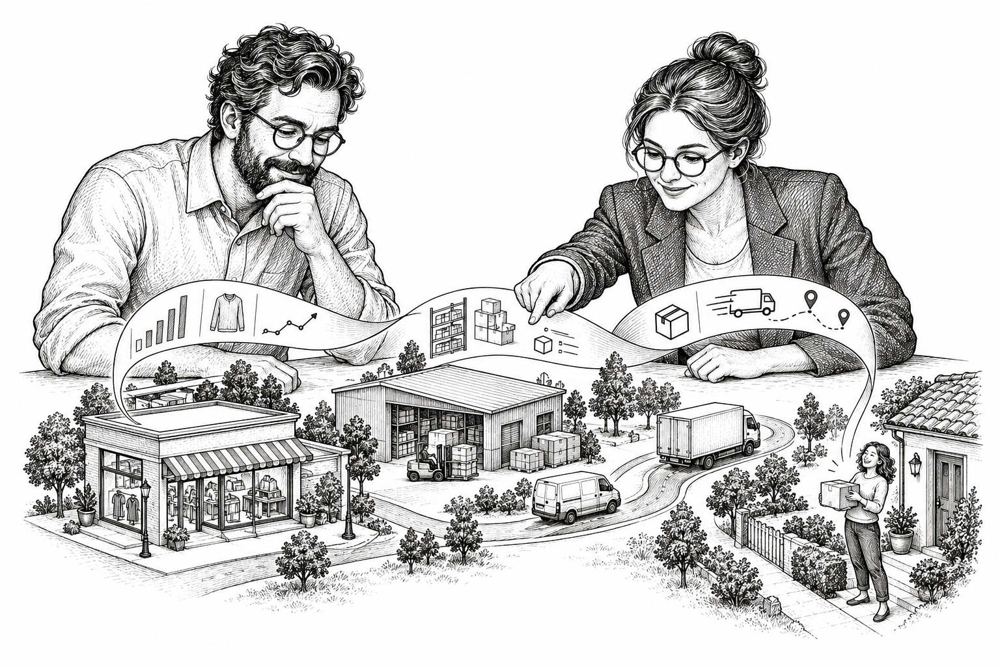

PLATAFORMA DE DATOS RETAIL · ENTREGA INTEGRALUna vista completa
Una vista completa
para decidir mejor.
Lumina integra las señales del negocio, las convierte en productos de datos y las acerca a las decisiones operativas.

POR DÓNDE EMPEZAR
01 · VISOR DE ARQUITECTURA
01 / 08Modelo ArchiMate
Vista completa de la solución: negocio, aplicaciones, tecnología, datos y relaciones.

Modelo canónico de arquitecturaLa vista principal para entender cómo se organiza la solución y cómo se conectan sus capas.